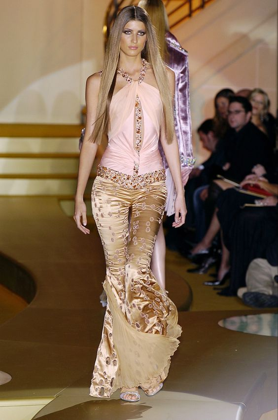
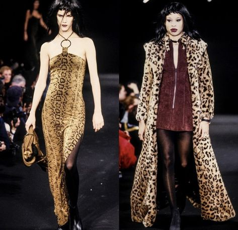
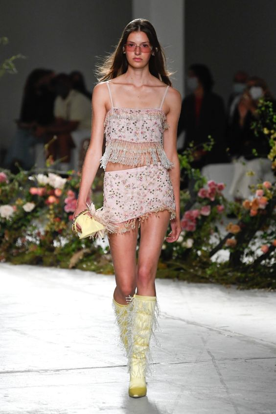
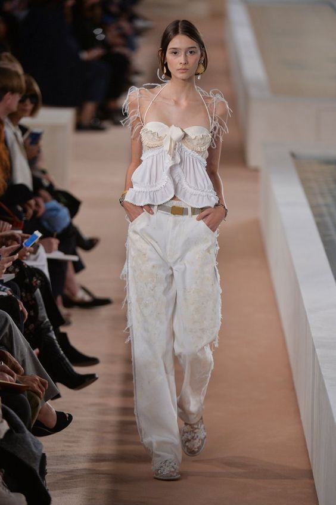
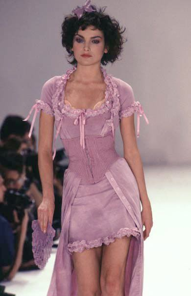
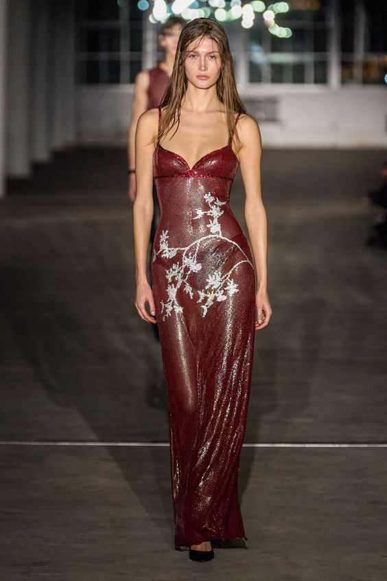
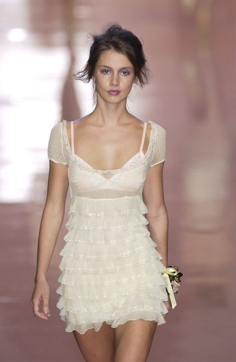

Eight Iconic Runway Looks to Recreate for Summer 2024

Bluemarine Gold Flare Pants Runway Look Forward 2002.

Cheeta Print takes runway looks to the next level, these looks can work together or seperate.

Fringe yellow boots look from Blumarine in 2021.

All white runway look from 2005 show. Model wears baggy jeans and flowy white top. Gold Gaurav Gupta Haute couture. This desinger leans into plated metals in 2024 runway.

1997 Betsey Johnson iconic pink corset runway look. Lots of bows feul this look.

Show stopping deep red latex looking maxi dress.

This girly cottege core Blumarine white dress is a iconic piece from their 2004 collection.